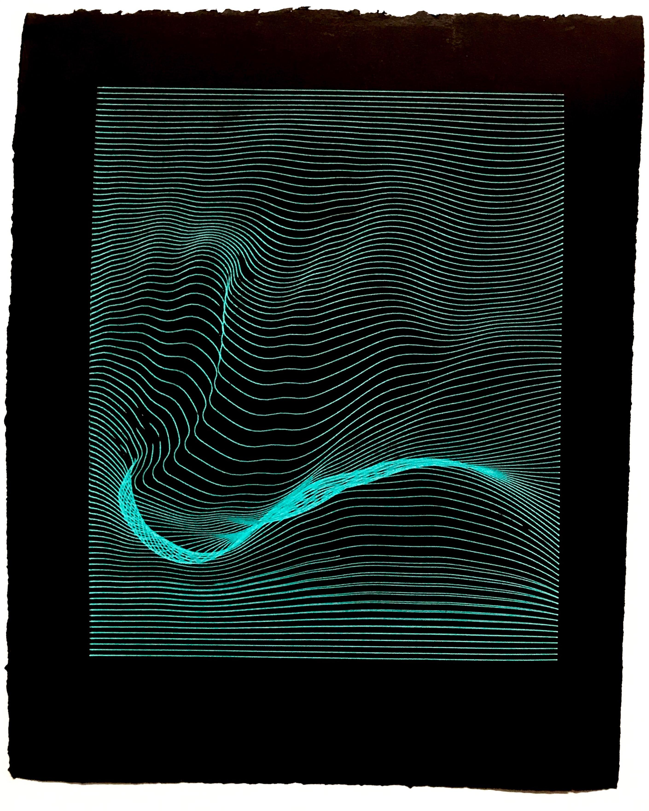

Programmed Plotter Drawings
Project Info

Q&A
¿Qué haces ahora?
Me acabo de graduar del programa de Nuevos Medios (New Media) de la Universidad de Ryerson. Después de 4 años de programación y fabricación de robots, decidí tomar un descanso y jugar con algunas formas de arte más tradicionales, mientras que todavía programando y jugando con robots.
¿Cómo empezaste con p5.js?
¡Comencé a usar p5.js en NYU ITP Camp! After using Processing! Después de usar Processing durante muchos años, quería probar algo nuevo.
¿Cómo usaste p5.js en este proyecto?
Utilicé p5.js en este proyecto para generar las fórmulas de onda sinusoidal y lerp (interpolación lineal) y mostrar las imágenes en el p5.js Web Editor. Luego usé una función en mi código que exportaba mi gráfico programado a un archivo SVG. Necesitaba un archivo SVG para darle al plotter, un AxiDraw V3, para que entendiera dónde dibujar las líneas que programé. ¡Envié esta información al trazador con un programa llamado Inkscape!
¿Cuál es tu función favorita de p5.js?
lerp() porque las líneas son divertidas y "lerp" es una palabra divertida para decir!
¿Enfrentó algún desafío al trabajar en este proyecto? Si es así, ¿cómo los superaste?
¡Era la primera vez que usaba p5.js, Inkscape y un plotter! Realmente me beneficié de las personas a mi alrededor que habían usado p5 antes, así como de guías y foros en línea.
¿Qué es algo cool que deberíamos explorar?
@gandyworks en Instagram: cosas de plotter análogo súper geniales.
¿En dónde se puede aprender más sobre ti?
ronicantor.com
@roni.cantor (Instagram)